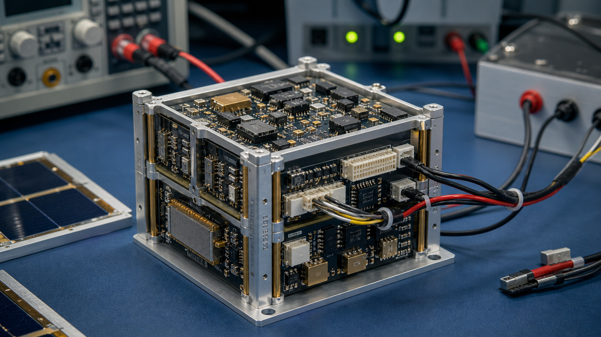

注目のストーリー
小型衛星の「量産化」は
どこまで来たのか
標準化バスの進化、部品の安定調達、試験の自動化。国内外の現場を取材し、小型衛星の量産を支える技術と仕組みの現在地を描く。
小型衛星のいまを、深く、静かに、正確に。
注目のストーリー
標準化バスの進化、部品の安定調達、試験の自動化。国内外の現場を取材し、小型衛星の量産を支える技術と仕組みの現在地を描く。

 特集
特集
JAXAや防衛省、自治体の調達動向を整理。参入の鍵となる要件とプロセスを解説する。

レポート地政学、輸出規制、供給制約。調達担当者が押さえるべき論点と対応策をまとめる。
 インタビュー
インタビュー
アクセルスペースCTOに聞く、次世代ミッションとオンボード処理の未来。